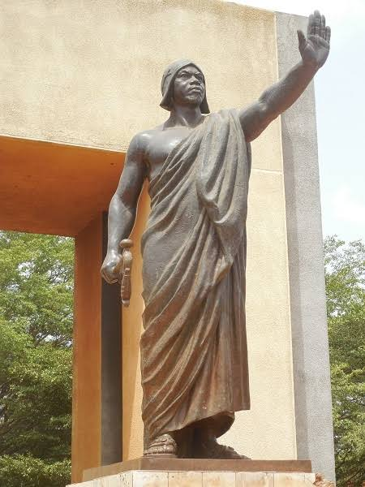
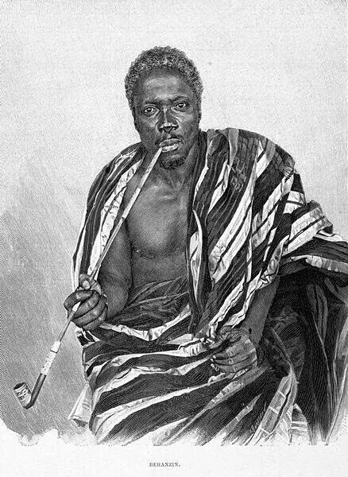

120e anniversaire de la mort duROI
BÉHANZIN
Honorer la mémoire de Dada Gbêhanzin, figure majeure de l’histoire du Dahomey et de la résistance à la conquête coloniale.
— Devise attribuée au roi Béhanzin
Le Roi Béhanzin
Né vers 1844–1845 sous le nom de Kondo, il devient roi du Dahomey en 1890. Son règne est marqué par son opposition à l’expansion coloniale française.
Souverain du royaume du Dahomey, dont la capitale était Abomey, Béhanzin défend l’autonomie politique de son royaume dans une période de fortes tensions avec la France.
Après la prise d’Abomey par les troupes françaises en 1892, il poursuit la résistance avant de se rendre en 1894. Déporté en Martinique, il est ensuite transféré en Algérie, où il meurt à Blida le 10 décembre 1906.
« Je n’accepterai jamais de signer aucun traité susceptible d’aliéner l’indépendance de la terre de mes aïeux. »
Sa mémoire reste liée à l’histoire du Dahomey, aux Agodjiés et aux débats sur la souveraineté, la colonisation et la transmission du patrimoine.
Découvrir les cérémonies →

Programme des cérémonies
Temps forts annoncés et propositions de célébration autour du 120e anniversaire. Les horaires et lieux précis sont à confirmer par les organisateurs.
Colloque scientifique international
Abomey · Ouverture du colloque autour du legs de Dada Gbêhanzin.
Conférences & échanges
Abomey · Communications, débats et rencontres culturelles.
Journée commémorative
Cérémonies officielles, mémoire, culture et transmission — programme détaillé à confirmer.
Expositions & veillée traditionnelle
Activités complémentaires en cours de préparation.
Galerie photos & vidéos
Deux portraits d’archives fournis pour cette maquette. Vous pourrez ajouter vos images et vidéos documentaires dans cette section.
Inscription des participants
Faites part de votre intérêt pour les cérémonies du 120e anniversaire du décès du Roi Béhanzin.
Cette maquette présente un formulaire de démonstration. Pour recevoir réellement les inscriptions, il faudra le connecter à un service de formulaire ou à votre serveur.
Partenaires & sponsors
Espace réservé aux institutions, mécènes et partenaires officiels. Les noms ci-dessous sont des pistes de contact ou des exemples, pas des soutiens confirmés.
Carte des lieux de mémoire
Repères historiques et lieux proposés pour situer l’événement. Les points ne remplacent pas une carte de navigation.
Palais royaux, musée historique, Place Goho, Djimè
Relais culturel et expositions éventuelles
Lieu du décès de Béhanzin en 1906
Lieu de son exil après sa reddition